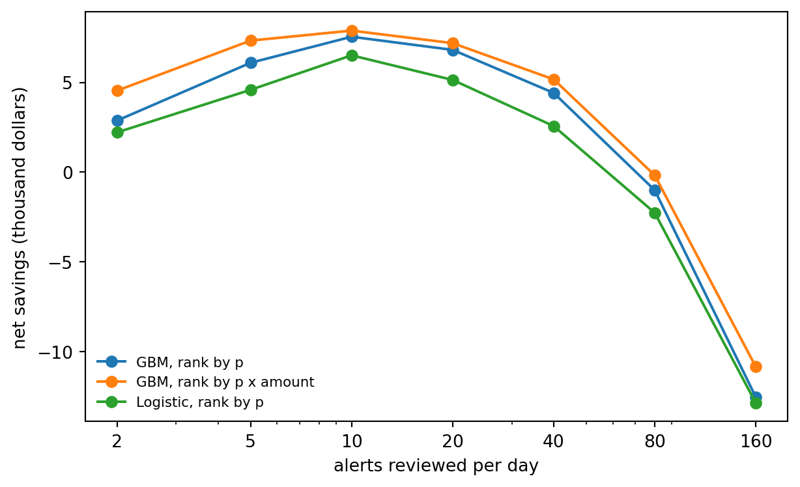
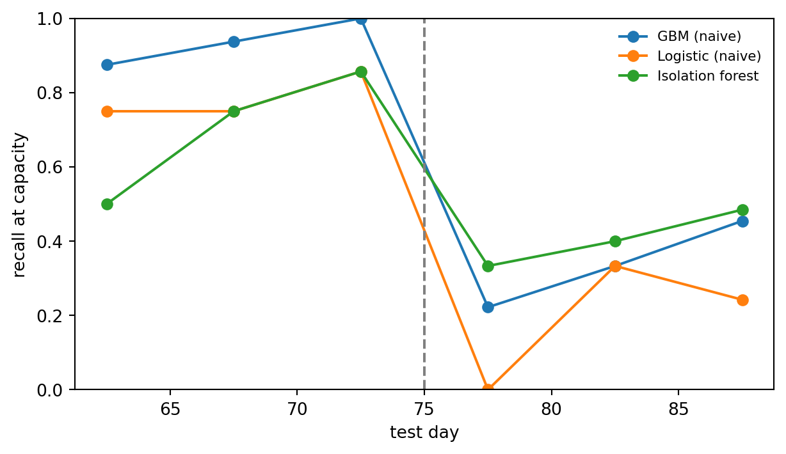

Rare events, adaptive adversaries, late labels, and a review team that can only look at so many alerts
A card issuer processes millions of transactions a day, and a few hundred of them are fraudulent. Every one of the fraudulent ones costs money if it goes through, and every legitimate one that gets blocked costs a customer’s goodwill and sometimes the customer. Behind the model sits a team of analysts who can review a fixed number of alerts per shift. Fraud detection is therefore not a classification problem in the textbook sense. It is a ranking problem under a capacity constraint, against an opponent who changes tactics when you catch on, with labels that arrive weeks late and are sometimes wrong.
This chapter treats fraud detection as that operational problem. It builds on the general tools developed elsewhere in the book (the chapters on handling imbalanced data, cost-sensitive learning, model calibration, anomaly detection foundations, and Chapter 277) and focuses on what is specific to financial fraud: transaction-level feature engineering, graph signals such as the common point of compromise, evaluation that counts dollars and analyst hours, delayed and noisy chargeback labels, and the fact that the fraud you will see next month is not the fraud you trained on. A single synthetic card portfolio runs through the chapter, so every idea is tested on the same data.
233.1 The Shape of the Problem
233.1.1 A short taxonomy
Fraud in retail banking falls into a handful of families, and each leaves different traces in the data.
Card-not-present and counterfeit card fraud. Card details are stolen (by skimming at a compromised terminal, a merchant data breach, or phishing) and then used online or on a cloned card. The trace is a burst of unusual transactions on an otherwise normal card.
Account takeover. A fraudster gains control of a customer’s online banking credentials and moves money out. The trace is a change of device, location, or payee followed by outbound transfers.
Application fraud and synthetic identities. A new account is opened with stolen or fabricated identity data, used normally for months to build a credit line, and then maxed out (“bust-out”). The trace lives in application data and in links between applications that share phone numbers, addresses, or devices.
Authorized push payment scams. The real customer is tricked into sending money. Every authentication check passes, so the signal is in the payee and the payment pattern, not the credentials.
First-party and internal fraud. Customers who dispute legitimate purchases, merchants who collude, and employees who misuse access. Labels are especially unreliable here because the “victim” may be the perpetrator.
Bolton and Hand (2002) set out the statistical view of the field that still frames it: fraud detection is a moving target, the classes are wildly unbalanced, the costs of the two errors differ by orders of magnitude, and both supervised and unsupervised methods have a role because new fraud types have no labels yet.
233.1.2 Why accuracy is meaningless here
Let \(\pi = P(Y = 1)\) be the fraud rate. In card portfolios \(\pi\) is typically well below one percent. A model that predicts “legitimate” for everything has accuracy \(1 - \pi\), which looks excellent and catches nothing. The ROC curve is also misleading in this regime. A false positive rate of one percent sounds small, but applied to a million legitimate transactions it means ten thousand alerts, which no team can review. Saito and Rehmsmeier (2015) show that the precision-recall curve is more informative than the ROC curve when classes are imbalanced, because precision is computed on the flagged set, which is exactly what the analysts see.
The quantities that matter operationally are defined on the top of the ranking. Sort transactions by score and let \(\mathcal{A}_k\) be the \(k\) highest. Then
where \(a_i\) is the transaction amount and \(k\) is set by review capacity. Dal Pozzolo et al. (2018) argue that a realistic evaluation of card fraud detection should be built on exactly this alert-based precision, because an investigator who receives \(k\) alerts per day cares about how many of them are fraud, not about the ranking of the millions of transactions below the cut.
233.1.3 Expected loss and the decision to alert
Suppose reviewing an alert costs \(c\) (analyst time and a small customer friction cost) and a correctly stopped fraud saves its amount \(a_i\). With a calibrated probability \(p_i = P(Y_i = 1 \mid x_i)\), alerting on transaction \(i\) has expected value
so without a capacity limit you should alert whenever \(p_i a_i > c\), which is the cost-sensitive threshold of Elkan (2001) with an amount-dependent cost. With a capacity of \(C\) alerts per period, every alert uses one unit of the same budget, so the optimal policy is to rank by \(p_i a_i\) and take the top \(C\) (stopping early if the gain turns negative). Two lessons follow. First, ranking by probability alone is not the same as ranking by expected loss, and the difference is large when fraud amounts vary. Second, the policy needs calibrated probabilities, which matters because fraud models are often trained on undersampled data. If the negatives are kept with probability \(\beta\), a model trained on the sample estimates \(p_s\), and the population probability is recovered by
as derived by Dal Pozzolo et al. (2015). Forgetting this correction inflates every probability and silently breaks Equation 233.2.
233.2 A Synthetic Card Portfolio
The simulation below generates ninety days of transactions for a few thousand cards. Legitimate behavior is card specific: each card has its own spending rate, typical amount, and a set of favorite merchants. Fraud enters in two ways. A few popular merchants are compromised for a ten-day window (a skimmer or a breached checkout page), and cards that shop there during the window may have their details stolen. A small number of other cards suffer account takeover at random times. A few days after compromise the fraudster uses the card. Until day 75 the modus operandi is classic: a couple of tiny “card testing” transactions at random merchants to check the card works, then a burst of large purchases at high-risk merchants at night. From day 75 the fraudsters adapt. They skip the testing, shop during the day, and keep amounts closer to the cardholder’s normal spend. Finally, labels arrive through chargebacks with a delay of weeks, and some fraud is never reported at all.
Code
import numpy as npimport pandas as pdimport matplotlib.pyplot as pltrng = np.random.default_rng(1205)N_CARDS, N_MERCH, DAYS =4000, 500, 90CUTOFF_DAY, DRIFT_DAY =60, 75# train on days < 60, adversary adapts at day 75# Merchants: skewed popularity and a high-risk category flag (electronics, gift cards, ...)merch_pop = rng.gamma(0.6, 1.0, N_MERCH)merch_pop /= merch_pop.sum()merch_highrisk = rng.random(N_MERCH) <0.10# Legitimate activity: card-specific rate, amount level, and favorite merchantscard_rate = rng.gamma(2.0, 0.2, N_CARDS) # transactions per daycard_mu = rng.normal(4.0, 0.7, N_CARDS) # log of typical amountfavorites = rng.choice(N_MERCH, size=(N_CARDS, 8), p=merch_pop)n_tx = rng.poisson(card_rate * DAYS)card = np.repeat(np.arange(N_CARDS), n_tx)n = card.sizehour = np.mod(rng.normal(15, 5, n), 24)t = rng.integers(0, DAYS, n) + hour /24use_fav = rng.random(n) <0.7merchant = np.where(use_fav, favorites[card, rng.integers(0, 8, n)], rng.choice(N_MERCH, size=n, p=merch_pop))amount = np.exp(card_mu[card] + rng.normal(0, 0.5, n))legit = pd.DataFrame({"card": card, "merchant": merchant, "t": t,"amount": amount, "is_fraud": 0})# Compromise events: breached merchants and random account takeoverscomp_time = np.full(N_CARDS, np.inf)breached = rng.choice(N_MERCH, size=10, replace=False, p=merch_pop)for m in breached: start = rng.uniform(0, 80) visits = legit[(legit.merchant == m) & legit.t.between(start, start +10)] first = visits.groupby("card").t.min() hit = first[rng.random(first.size) <0.35] comp_time[hit.index] = np.minimum(comp_time[hit.index], hit.values)ato = rng.choice(N_CARDS, size=int(0.005* N_CARDS), replace=False)comp_time[ato] = np.minimum(comp_time[ato], rng.uniform(0, 88, ato.size))# Fraud bursts: the modus operandi changes at DRIFT_DAYrows = []risky = np.flatnonzero(merch_highrisk)for c in np.flatnonzero(np.isfinite(comp_time)): s = comp_time[c] + rng.exponential(3.0)if s >= DAYS:continueif s < DRIFT_DAY: # card testing, then late-night cash-out s = np.floor(s) + np.mod(rng.normal(1, 3), 24) /24if rng.random() <0.6:for _ inrange(rng.integers(1, 3)): rows.append((c, rng.integers(N_MERCH), s, rng.uniform(1, 10), 1)) s += rng.uniform(2, 30) /1440for _ inrange(rng.integers(2, 6)): m = rng.choice(risky) if rng.random() <0.7else rng.choice(N_MERCH, p=merch_pop) rows.append((c, m, s, np.exp(card_mu[c] +1.0+ rng.normal(0, 0.5)), 1)) s += rng.uniform(10, 120) /1440else: # adapted: daytime, normal-looking amounts s = np.floor(s) + np.mod(rng.normal(15, 4), 24) /24for _ inrange(rng.integers(2, 6)): m = rng.choice(risky) if rng.random() <0.3else rng.choice(N_MERCH, p=merch_pop) rows.append((c, m, s, np.exp(card_mu[c] +0.6+ rng.normal(0, 0.5)), 1)) s += rng.uniform(0.3, 2) /24fraud = pd.DataFrame(rows, columns=legit.columns)df = pd.concat([legit, fraud], ignore_index=True)df = df[df.t < DAYS].sort_values(["card", "t"]).reset_index(drop=True)# Chargeback labels: delayed by weeks, and some fraud is never reporteddelay = np.exp(rng.normal(np.log(20), 0.6, len(df)))reported = rng.random(len(df)) >0.15df["report_t"] = np.where((df.is_fraud ==1) & reported, df.t + delay, np.inf)df["merch_highrisk"] = merch_highrisk[df.merchant].astype(int)pd.Series({"transactions": len(df), "fraud transactions": int(df.is_fraud.sum()),"fraud rate": round(df.is_fraud.mean(), 5),"fraud share of dollars": round(df.amount[df.is_fraud ==1].sum() / df.amount.sum(), 4),"cards defrauded": df.card[df.is_fraud ==1].nunique()})
The fraud rate is a fraction of a percent, and fraud’s share of dollars is larger than its share of transactions because the cash-out transactions are big. That gap is the first argument for evaluating in dollars.
233.2.1 Labels arrive late
A transaction’s true label is not known when the transaction happens. The cardholder notices the charge on a statement, disputes it, and the chargeback is filed days or weeks later. The figure below shows how much of the fraud is labeled as a function of the time since it occurred, and how many fraud transactions in the training window are still unlabeled on the day the model is trained.
Figure 233.1: Left: share of fraud transactions whose chargeback label has arrived, by days since the transaction. The curve plateaus below one because some fraud is never reported. Right: fraud transactions in the training window by day, split into those labeled by the training cutoff and those still unlabeled. The most recent fraud, which is the most relevant, is the least labeled.
If you train on everything before the cutoff with the labels you have, the recent unlabeled fraud enters the training set as legitimate. This is label noise of the worst kind, because it is concentrated in the newest and most relevant data. We return to it when training.
233.3 Feature Engineering on Transactions
A single transaction says little. The amount, the merchant category, and the time of day are weak signals by themselves. The information is in how the transaction relates to the card’s own history and to the network of other cards and merchants. The literature has converged on three kinds of features.
Velocity and aggregates. Counts and sums over sliding windows per card: transactions in the last hour, spend in the last 24 hours, time since the previous transaction. Whitrow et al. (2009) showed that aggregating a card’s recent transactions improves detection substantially over single-transaction features, and Correa Bahnsen et al. (2016) extended the idea with periodic features that capture each customer’s usual time of day.
Deviation from the customer’s own baseline. The same $400 purchase is ordinary for one cardholder and alarming for another. Expressing the amount relative to the card’s running mean, and flagging the first visit to a merchant, turns population-level features into personal ones.
Point-in-time correctness. Every feature must be computable from information available at the moment of authorization. A “spend in the last 24 hours” window must exclude the current transaction and anything later, and any feature that uses labels must use only labels that had arrived by then. Violating this is the most common way fraud models look excellent offline and fail in production.
For a card \(c\) with transactions at times \(t_1 < t_2 < \dots\), the windowed count and sum for transaction \(j\) are
233.4 Graph Signals: The Common Point of Compromise
Fraud is rarely an isolated event. Cards are stolen in batches at the same breached merchant, mule accounts receive money from many victims, and synthetic identities share phone numbers and devices. A transaction graph (cards and merchants as nodes, transactions as edges) exposes these links. Van Vlasselaer et al. (2015) showed that network features propagated over the card and merchant graph add substantial lift to transaction features in card fraud. Akoglu et al. (2015) survey graph-based anomaly detection more broadly, and graph neural networks are now common in industry. Dou et al. (2020) document a characteristic difficulty for them: fraudsters camouflage by connecting to many benign nodes, which dilutes the neighborhood aggregation that graph neural networks rely on.
A classic and transparent graph feature in card fraud is the common point of purchase. If many cards that were later defrauded all shopped at the same merchant shortly beforehand, that merchant is probably compromised, and every other card that shopped there is at elevated risk. In bipartite terms this is a two-hop signal: card, to merchant, to other cards’ labels. For merchant \(m\) at snapshot time \(s\), let \(V_m(s)\) be the number of distinct cards that transacted there before \(s\) and \(B_m(s)\) the number of those cards with a fraud label known by \(s\). The smoothed, leave-one-out compromise score seen by card \(c\) is
where \(b_c(s)\) and \(v_{cm}(s)\) remove card \(c\)’s own contribution (so a card’s own label never leaks into its own feature), \(r_0\) is the base rate of known-fraud cards, and \(\alpha\) is a pseudo-count. The card’s exposure at transaction time is the running maximum of \(r_{m,-c}\) over merchants it has visited. We recompute the merchant scores weekly from the labels available each week, which keeps the feature point-in-time correct.
Code
def cpp_week(df, s, alpha=5.0):"""Leave-one-out merchant compromise scores for rows in [s, s+7), using info known at s.""" past = df[df.t < s] known_bad = past[past.report_t < s].card.unique() pairs = past[["card", "merchant"]].drop_duplicates() pairs = pairs.assign(bad=pairs.card.isin(known_bad).astype(float)) V = pairs.groupby("merchant").size() B = pairs.groupby("merchant").bad.sum() r0 =len(known_bad) /max(past.card.nunique(), 1) wk = df[(df.t >= s) & (df.t < s +7)] own_v = pd.MultiIndex.from_frame(wk[["card", "merchant"]]).isin( pd.MultiIndex.from_frame(pairs[["card", "merchant"]])).astype(float) own_b = own_v * wk.card.isin(known_bad).to_numpy() Vm = wk.merchant.map(V).fillna(0).to_numpy() Bm = wk.merchant.map(B).fillna(0).to_numpy()return pd.Series((Bm - own_b + alpha * r0) / (Vm - own_v + alpha), index=wk.index)score = pd.concat([cpp_week(df, s) for s inrange(0, DAYS, 7)]).reindex(df.index)df["cpp_exposure"] = score.groupby(df.card).cummax().groupby(df.card).shift(1).fillna(0.0)df.groupby("is_fraud").cpp_exposure.describe().round(4)
count
mean
std
min
25%
50%
75%
max
is_fraud
0
144739.0
0.0574
0.0689
0.0
0.0036
0.0394
0.0889
0.6398
1
942.0
0.0984
0.1286
0.0
0.0079
0.0560
0.1155
0.6025
Defrauded transactions have noticeably higher exposure on average, even though the feature never looks at the transaction itself, only at where the card has been and what happened to other cards that were there.
233.5 Supervised Models, Anomaly Detection, and Late Labels
Two families of methods compete. Supervised classifiers learn from labeled fraud and are the workhorse in production. Gradient-boosted trees dominate on tabular transaction data, consistent with the broader finding of Grinsztajn et al. (2022) that tree ensembles still beat deep networks on typical tabular problems. Unsupervised anomaly detectors, such as the isolation forest of Liu et al. (2008), need no labels and can in principle flag fraud patterns never seen before. The catch is that anomalous is not the same as fraudulent. Most unusual transactions are legitimate (a holiday abroad, a new laptop), and well-organized fraud is designed to look normal. In practice the two are combined. Carcillo et al. (2021) show that adding unsupervised outlier scores as features to a supervised model gives a modest but consistent gain on real card data.
We train three models on the first sixty days and test on the last thirty, using the true labels for testing:
a logistic regression on standardized features, a strong and auditable baseline,
a histogram gradient-boosted tree ensemble,
an isolation forest, scored by its anomaly score, as the unsupervised reference.
For the supervised models we compare three training regimes that differ only in which labels they use. Naive trains on all sixty days with the labels known at the cutoff, so recent unlabeled fraud is treated as legitimate. Matured drops the last twenty days of the window, where labels are least complete, and trains on the remaining forty. Oracle uses the true labels for all sixty days, which no real system has, and shows what the label delay costs.
The table reports, for each model, the threshold-free metrics and the metrics at a capacity of CAP_PER_DAY alerts per day. Several patterns are worth reading off. First, every model has a ROC AUC that looks excellent and the values sit close together, while average precision and the alert-based metrics spread them apart, which is the Saito and Rehmsmeier argument playing out. Second, precision at capacity is low in absolute terms. At this capacity most alerts are still legitimate transactions, simply because there are only a handful of frauds per day among well over a thousand transactions. Third, the isolation forest is a surprisingly strong competitor over the whole test period, even beating the logistic regression, although it never saw a label. Its features were engineered with fraud in mind (velocity, deviation from the card’s baseline), so the anomalies it finds are largely the right ones. The next section shows where that strength comes from. Finally, compare the three gradient-boosted regimes. The oracle shows the ceiling, and the gap between it and the naive model is the price of label delay. Dropping the immature tail of the training window trades sample size for label quality, and whether it wins depends on how fast labels mature relative to how fast fraud patterns change.
Figure 233.2: Precision-recall curves on the thirty-day test period. The dashed line is the fraud rate, the precision of random alerting. The marked points show each model’s operating point at the daily review capacity.
233.6 Setting the Threshold Under Review Capacity
The operating question is not “what threshold?” but “how many alerts per day, and which ones?”. Equation 233.2 says to rank by expected loss \(p_i a_i\), not by \(p_i\). The gradient-boosted model was trained on the raw fraud rate, so its probabilities are roughly on the right scale. If it had been trained on undersampled data, Equation 233.3 would have to be applied first. The figure below sweeps the daily capacity and computes the net savings, the fraud dollars stopped minus the cost of reviewing every alert, for ranking by probability and ranking by expected loss.
Code
REVIEW_COST =5.0caps = [2, 5, 10, 20, 40, 80, 160]p_gbm = scores["GBM (naive)"]curves = {"GBM, rank by p": p_gbm, "GBM, rank by p x amount": p_gbm * a_te,"Logistic, rank by p": scores["Logistic (naive)"]}fig, ax = plt.subplots(figsize=(6.5, 4.0))net = {}for name, s in curves.items(): vals = []for cap in caps: flag = topk_per_day(s, cap) vals.append((a_te * y_te)[flag].sum() - REVIEW_COST * flag.sum()) net[name] = vals ax.plot(caps, np.array(vals) /1000, "o-", label=name)ax.set_xscale("log"); ax.set_xticks(caps); ax.set_xticklabels(caps)ax.set_xlabel("alerts reviewed per day"); ax.set_ylabel("net savings (thousand dollars)")ax.legend(frameon=False, fontsize=8)plt.tight_layout()plt.show()pd.DataFrame(net, index=caps).rename_axis("alerts/day").round(0)

(a) Net savings over the test period as a function of daily review capacity, with a review cost of 5 dollars per alert. Ranking by expected loss (probability times amount) stops more fraud dollars at every capacity than ranking by probability alone. The curves flatten, and eventually fall, once extra alerts mostly land on legitimate transactions.
GBM, rank by p
GBM, rank by p x amount
Logistic, rank by p
alerts/day
2
2875.0
4543.0
2218.0
5
6094.0
7331.0
4588.0
10
7546.0
7888.0
6510.0
20
6814.0
7189.0
5141.0
40
4417.0
5173.0
2570.0
80
-998.0
-171.0
-2261.0
160
-12527.0
-10834.0
-12854.0
(b)
Figure 233.3
Three practical notes. First, in production the scores arrive one at a time, so “top \(C\) per day” must be implemented as a threshold. The usual approach is to set the threshold at the score quantile that produced \(C\) alerts per day over the recent past, and to monitor realized alert volume, because drift moves the score distribution and with it the alert count. Second, the review cost \(c\) should include the cost of a false decline to the customer, which in card portfolios is often larger than the analyst’s time. Third, most issuers run a tiered policy rather than a single threshold: decline outright above a very high score, step up authentication (a one-time passcode or an app confirmation) in a middle band, and approve below. Step-up authentication is cheap per event, so it lets the issuer act on far more transactions than the analysts could review.
233.7 Concept Drift and Adversarial Adaptation
Fraud is the canonical example of adversarial concept drift. In most drift problems the world changes for its own reasons. In fraud, the change is a response to your model: once a pattern gets blocked, fraudsters stop using it. Gama et al. (2014) survey the adaptation strategies (windowed retraining, ensembles of models of different ages, explicit drift detectors), and Chapter 277 covers them in detail. Two aspects are specific to fraud. First, the adversary targets your features. If night-time spending and card testing are what you catch, fraudsters move to daytime and skip testing, exactly as in our simulation. This is strategic classification in the sense of Hardt et al. (2016), and Biggio and Roli (2018) review the wider adversarial machine learning literature. Second, labels arrive late, so a drift detector that waits for labels learns about the new pattern weeks after it starts. Monitoring unlabeled signals (score distributions, alert volumes, feature distributions, and early proxies such as customer complaints and declined step-up challenges) is how teams notice drift in time, as discussed in Chapter 280.
Code
blocks = (test_day - CUTOFF_DAY) //5fig, ax = plt.subplots(figsize=(6.5, 3.8))for name in ["GBM (naive)", "Logistic (naive)", "Isolation forest"]: flag = topk_per_day(scores[name]) rec = [y_te[flag & (blocks == b)].sum() /max(y_te[blocks == b].sum(), 1)for b inrange(blocks.max() +1)] ax.plot(CUTOFF_DAY +5* np.arange(len(rec)) +2.5, rec, "o-", label=name)ax.axvline(DRIFT_DAY, color="grey", ls="--")ax.set_xlabel("test day"); ax.set_ylabel("recall at capacity"); ax.set_ylim(0, 1)ax.legend(frameon=False, fontsize=8)plt.tight_layout()plt.show()pre, post = test.t < DRIFT_DAY, test.t >= DRIFT_DAYpd.DataFrame({name: {"AP before change": average_precision_score(y_te[pre], s[pre]),"AP after change": average_precision_score(y_te[post], s[post])}for name, s in scores.items()}).T.round(3)

(a) Recall at the daily review capacity in five-day blocks of the test period. The vertical line marks the day the fraudsters change tactics. The supervised models, trained on the old modus operandi, lose much of their recall after the change. The isolation forest, which never learned the old pattern, degrades less. Block-level recall is noisy because each block holds only a few dozen frauds.
AP before change
AP after change
GBM (naive)
0.746
0.117
GBM (matured)
0.839
0.139
GBM (oracle)
0.919
0.195
Logistic (naive)
0.644
0.074
Isolation forest
0.518
0.203
(b)
Figure 233.4
Before the change, the supervised gradient-boosted model is clearly the best ranker. After it, the ordering flips and the isolation forest, which has no labels to be misled by, holds up better than the models that learned the old pattern. This is the practical case for running an unsupervised sentinel next to the supervised model, and for the hybrid designs of Carcillo et al. (2021). The supervised model does not collapse entirely either, because some of its features (velocity, new merchants, compromise exposure) describe how stolen cards are used rather than what the fraudster buys, and those are harder to disguise. That is a general design lesson. Features tied to the mechanics of fraud (a stolen card is used in a burst, shortly after a compromise, at merchants the cardholder has never visited) are more robust than features tied to a specific modus operandi (night-time, high-risk merchant categories). The graph signal is especially durable because the fraudster cannot control where the victim shopped before the card was stolen.
233.8 Putting It Into Production
A deployed fraud system is a pipeline, not a model. Authorization decisions are made in tens of milliseconds, so features must be served from a low-latency store that maintains the velocity windows and graph scores incrementally. The model outputs a score, a rule layer combines it with hard business rules (sanctions lists, known compromised cards), and a policy layer maps it to approve, step-up, decline, or queue for review. Analyst decisions and chargebacks flow back as labels.
Several choices recur in mature systems.
Separate models for separate fraud types. Card-not-present fraud, account takeover, and application fraud have different features, label sources, and costs, and one model for all of them is usually worse than specialized models with a shared policy layer.
Retraining cadence matched to label maturity. Retrain often enough to follow drift but weight or exclude the immature tail of the window. Dal Pozzolo et al. (2018) propose training one model on the fresh feedback from investigated alerts and another on the delayed chargeback labels, and aggregating the two, which uses the fast but biased feedback without discarding the slow but complete labels.
Selection bias from your own interventions. Transactions that the current system declines never become chargebacks, so their labels are missing. A model retrained only on approved transactions learns from a censored sample. Keeping a small random holdout of alerts that are approved without intervention, or reviewing a random sample of declines, provides the unbiased data needed to evaluate and retrain.
Explanations for analysts and regulators. Analysts work faster when an alert comes with its main drivers (“four transactions in the last hour, first purchase at this merchant, card visited a merchant linked to recent fraud”). Adverse action rules also apply when fraud models decline credit applications.
Privacy and data sharing. Consortium data (shared compromise signals across issuers) is among the strongest fraud signals available, and it comes with data protection obligations that shape what can be shared and how.
233.9 Pitfalls and When to Use What
Random train and test splits. Splitting transactions at random lets the model see the same fraud burst in training and testing, and it hides drift. Always split by time, and check that no card’s future leaks into its past through features.
Resampling and then reading probabilities. SMOTE (Chawla et al., 2002) and undersampling can help some learners, but they distort probabilities. If you resample, correct with Equation 233.3 or recalibrate on untouched validation data before applying any cost-based policy. With gradient-boosted trees on large data, simply training on the original distribution is often as good.
Reporting ROC AUC alone. A high AUC is compatible with an alert queue that is ninety-nine percent false positives. Report precision and dollar recall at the operating capacity.
Ignoring label delay and noise. Treat unlabeled recent transactions as unknown rather than as legitimate, and expect a background rate of unreported fraud among the negatives.
Trusting anomaly detection to find fraud. Use unsupervised scores as features or as a sentinel for new patterns, not as the primary detector when labels exist.
Optimizing the model and forgetting the policy. Much of the value comes from ranking by expected loss, tiered responses, and capacity planning, which cost nothing in model complexity.
Supervised gradient-boosted trees on carefully engineered, point-in-time-correct features remain the default for transaction fraud in 2026. Graph features, or graph neural networks when the relational structure is rich, add value where fraud is organized (rings, mule networks, synthetic identities). Unsupervised methods earn their place when labels are scarce, for brand-new products, and as drift sentinels.
233.10 Exercises
Undersampling and calibration. Retrain the naive gradient-boosted model on a sample that keeps all fraud and ten percent of legitimate transactions. Compare the mean predicted probability on the test set with the true fraud rate before and after applying Equation 233.3, and recompute the expected-loss ranking.
Retraining after the change. Simulate weekly retraining from day 60 onward, each time using only the labels available on that day. How many weeks pass before recall at capacity recovers after the day-75 change, and how does that depend on the median reporting delay?
Hybrid features. Add the isolation forest score as a feature to the gradient-boosted model (Carcillo et al., 2021). Does it help more after the change than before?
Feature ablation. Drop the compromise exposure feature and retrain. Which part of the test period loses the most recall?
Threshold from history. Replace the per-day top \(C\) rule with a fixed threshold set from the last week of training scores. Plot the realized number of alerts per day in the test period and explain the pattern.
233.11 References
Bolton, R. J. and Hand, D. J. “Statistical Fraud Detection: A Review.” Statistical Science 17(3), 2002, 235-255. https://doi.org/10.1214/ss/1042727940
Dal Pozzolo, A., Boracchi, G., Caelen, O., Alippi, C., and Bontempi, G. “Credit Card Fraud Detection: A Realistic Modeling and a Novel Learning Strategy.” IEEE Transactions on Neural Networks and Learning Systems 29(8), 2018, 3784-3797. https://doi.org/10.1109/TNNLS.2017.2736643
Dal Pozzolo, A., Caelen, O., Johnson, R. A., and Bontempi, G. “Calibrating Probability with Undersampling for Unbalanced Classification.” IEEE Symposium Series on Computational Intelligence, 2015, 159-166. https://doi.org/10.1109/SSCI.2015.33
Saito, T. and Rehmsmeier, M. “The Precision-Recall Plot Is More Informative than the ROC Plot When Evaluating Binary Classifiers on Imbalanced Datasets.” PLoS ONE 10(3), 2015, e0118432. https://doi.org/10.1371/journal.pone.0118432
Elkan, C. “The Foundations of Cost-Sensitive Learning.” Proceedings of the Seventeenth International Joint Conference on Artificial Intelligence (IJCAI), 2001, 973-978.
Whitrow, C., Hand, D. J., Juszczak, P., Weston, D., and Adams, N. M. “Transaction Aggregation as a Strategy for Credit Card Fraud Detection.” Data Mining and Knowledge Discovery 18(1), 2009, 30-55. https://doi.org/10.1007/s10618-008-0116-z
Correa Bahnsen, A., Aouada, D., Stojanovic, A., and Ottersten, B. “Feature Engineering Strategies for Credit Card Fraud Detection.” Expert Systems with Applications 51, 2016, 134-142. https://doi.org/10.1016/j.eswa.2015.12.030
Van Vlasselaer, V., Bravo, C., Caelen, O., Eliassi-Rad, T., Akoglu, L., Snoeck, M., and Baesens, B. “APATE: A Novel Approach for Automated Credit Card Transaction Fraud Detection Using Network-Based Extensions.” Decision Support Systems 75, 2015, 38-48. https://doi.org/10.1016/j.dss.2015.04.013
Akoglu, L., Tong, H., and Koutra, D. “Graph Based Anomaly Detection and Description: A Survey.” Data Mining and Knowledge Discovery 29(3), 2015, 626-688. https://doi.org/10.1007/s10618-014-0365-y
Dou, Y., Liu, Z., Sun, L., Deng, Y., Peng, H., and Yu, P. S. “Enhancing Graph Neural Network-Based Fraud Detectors against Camouflaged Fraudsters.” Proceedings of the 29th ACM International Conference on Information and Knowledge Management (CIKM), 2020, 315-324. https://doi.org/10.1145/3340531.3411903
Liu, F. T., Ting, K. M., and Zhou, Z.-H. “Isolation Forest.” Proceedings of the Eighth IEEE International Conference on Data Mining (ICDM), 2008, 413-422. https://doi.org/10.1109/ICDM.2008.17
Carcillo, F., Le Borgne, Y.-A., Caelen, O., Kessaci, Y., Oblé, F., and Bontempi, G. “Combining Unsupervised and Supervised Learning in Credit Card Fraud Detection.” Information Sciences 557, 2021, 317-331. https://doi.org/10.1016/j.ins.2019.05.042
Grinsztajn, L., Oyallon, E., and Varoquaux, G. “Why Do Tree-Based Models Still Outperform Deep Learning on Typical Tabular Data?” Advances in Neural Information Processing Systems 35 (Datasets and Benchmarks Track), 2022. https://proceedings.neurips.cc/paper_files/paper/2022/hash/0378c7692da36807bdec87ab043cdadc-Abstract-Datasets_and_Benchmarks.html
Gama, J., Žliobaitė, I., Bifet, A., Pechenizkiy, M., and Bouchachia, A. “A Survey on Concept Drift Adaptation.” ACM Computing Surveys 46(4), 2014, Article 44, 1-37. https://doi.org/10.1145/2523813
Hardt, M., Megiddo, N., Papadimitriou, C., and Wootters, M. “Strategic Classification.” Proceedings of the 2016 ACM Conference on Innovations in Theoretical Computer Science (ITCS), 2016, 111-122. https://doi.org/10.1145/2840728.2840730
Biggio, B. and Roli, F. “Wild Patterns: Ten Years after the Rise of Adversarial Machine Learning.” Pattern Recognition 84, 2018, 317-331. https://doi.org/10.1016/j.patcog.2018.07.023
Chawla, N. V., Bowyer, K. W., Hall, L. O., and Kegelmeyer, W. P. “SMOTE: Synthetic Minority Over-sampling Technique.” Journal of Artificial Intelligence Research 16, 2002, 321-357. https://doi.org/10.1613/jair.953
How to cite this chapter
Nguyen, M. (2026). Financial Fraud Detection. In AI in Action: A Reference for Artificial Intelligence. https://mikenguyen13.github.io/ai_in_action/1205-financial-fraud-detection.html
BibTeX
@incollection{nguyen2026aiinaction-1205financialfrauddetection,
author = {Nguyen, Mike},
title = {{Financial Fraud Detection}},
booktitle = {{AI in Action: A Reference for Artificial Intelligence}},
year = {2026},
url = {https://mikenguyen13.github.io/ai_in_action/1205-financial-fraud-detection.html},
note = {Online book}
}
Source Code
# Financial Fraud Detection {#sec-financial-fraud-detection}::: {.chapter-subtitle}Rare events, adaptive adversaries, late labels, and a review team that can only look at so many alerts:::A card issuer processes millions of transactions a day, and a few hundred of them are fraudulent. Every one of the fraudulent ones costs money if it goes through, and every legitimate one that gets blocked costs a customer's goodwill and sometimes the customer. Behind the model sits a team of analysts who can review a fixed number of alerts per shift. Fraud detection is therefore not a classification problem in the textbook sense. It is a ranking problem under a capacity constraint, against an opponent who changes tactics when you catch on, with labels that arrive weeks late and are sometimes wrong.This chapter treats fraud detection as that operational problem. It builds on the general tools developed elsewhere in the book (the chapters on handling imbalanced data, cost-sensitive learning, model calibration, anomaly detection foundations, and @sec-concept-drift) and focuses on what is specific to financial fraud: transaction-level feature engineering, graph signals such as the common point of compromise, evaluation that counts dollars and analyst hours, delayed and noisy chargeback labels, and the fact that the fraud you will see next month is not the fraud you trained on. A single synthetic card portfolio runs through the chapter, so every idea is tested on the same data.## The Shape of the Problem {#sec-1205-shape}### A short taxonomyFraud in retail banking falls into a handful of families, and each leaves different traces in the data.* **Card-not-present and counterfeit card fraud.** Card details are stolen (by skimming at a compromised terminal, a merchant data breach, or phishing) and then used online or on a cloned card. The trace is a burst of unusual transactions on an otherwise normal card.* **Account takeover.** A fraudster gains control of a customer's online banking credentials and moves money out. The trace is a change of device, location, or payee followed by outbound transfers.* **Application fraud and synthetic identities.** A new account is opened with stolen or fabricated identity data, used normally for months to build a credit line, and then maxed out ("bust-out"). The trace lives in application data and in links between applications that share phone numbers, addresses, or devices.* **Authorized push payment scams.** The real customer is tricked into sending money. Every authentication check passes, so the signal is in the payee and the payment pattern, not the credentials.* **First-party and internal fraud.** Customers who dispute legitimate purchases, merchants who collude, and employees who misuse access. Labels are especially unreliable here because the "victim" may be the perpetrator.Bolton and Hand (2002) set out the statistical view of the field that still frames it: fraud detection is a moving target, the classes are wildly unbalanced, the costs of the two errors differ by orders of magnitude, and both supervised and unsupervised methods have a role because new fraud types have no labels yet.### Why accuracy is meaningless hereLet $\pi = P(Y = 1)$ be the fraud rate. In card portfolios $\pi$ is typically well below one percent. A model that predicts "legitimate" for everything has accuracy $1 - \pi$, which looks excellent and catches nothing. The ROC curve is also misleading in this regime. A false positive rate of one percent sounds small, but applied to a million legitimate transactions it means ten thousand alerts, which no team can review. Saito and Rehmsmeier (2015) show that the precision-recall curve is more informative than the ROC curve when classes are imbalanced, because precision is computed on the flagged set, which is exactly what the analysts see.The quantities that matter operationally are defined on the top of the ranking. Sort transactions by score and let $\mathcal{A}_k$ be the $k$ highest. Then$$\text{Precision@}k = \frac{1}{k}\sum_{i \in \mathcal{A}_k} y_i,\qquad\text{Recall@}k = \frac{\sum_{i \in \mathcal{A}_k} y_i}{\sum_i y_i},\qquad\text{DollarRecall@}k = \frac{\sum_{i \in \mathcal{A}_k} y_i a_i}{\sum_i y_i a_i},$$ {#eq-1205-at-k}where $a_i$ is the transaction amount and $k$ is set by review capacity. Dal Pozzolo et al. (2018) argue that a realistic evaluation of card fraud detection should be built on exactly this alert-based precision, because an investigator who receives $k$ alerts per day cares about how many of them are fraud, not about the ranking of the millions of transactions below the cut.### Expected loss and the decision to alertSuppose reviewing an alert costs $c$ (analyst time and a small customer friction cost) and a correctly stopped fraud saves its amount $a_i$. With a calibrated probability $p_i = P(Y_i = 1 \mid x_i)$, alerting on transaction $i$ has expected value$$\mathbb{E}[\text{gain}_i] = p_i a_i - c,$$ {#eq-1205-gain}so without a capacity limit you should alert whenever $p_i a_i > c$, which is the cost-sensitive threshold of Elkan (2001) with an amount-dependent cost. With a capacity of $C$ alerts per period, every alert uses one unit of the same budget, so the optimal policy is to rank by $p_i a_i$ and take the top $C$ (stopping early if the gain turns negative). Two lessons follow. First, ranking by probability alone is not the same as ranking by expected loss, and the difference is large when fraud amounts vary. Second, the policy needs calibrated probabilities, which matters because fraud models are often trained on undersampled data. If the negatives are kept with probability $\beta$, a model trained on the sample estimates $p_s$, and the population probability is recovered by$$p = \frac{\beta\, p_s}{\beta\, p_s - p_s + 1},$$ {#eq-1205-undersample}as derived by Dal Pozzolo et al. (2015). Forgetting this correction inflates every probability and silently breaks @eq-1205-gain.## A Synthetic Card Portfolio {#sec-1205-simulation}The simulation below generates ninety days of transactions for a few thousand cards. Legitimate behavior is card specific: each card has its own spending rate, typical amount, and a set of favorite merchants. Fraud enters in two ways. A few popular merchants are *compromised* for a ten-day window (a skimmer or a breached checkout page), and cards that shop there during the window may have their details stolen. A small number of other cards suffer account takeover at random times. A few days after compromise the fraudster uses the card. Until day 75 the modus operandi is classic: a couple of tiny "card testing" transactions at random merchants to check the card works, then a burst of large purchases at high-risk merchants at night. From day 75 the fraudsters adapt. They skip the testing, shop during the day, and keep amounts closer to the cardholder's normal spend. Finally, labels arrive through chargebacks with a delay of weeks, and some fraud is never reported at all.```{python}#| label: code-1205-simulateimport numpy as npimport pandas as pdimport matplotlib.pyplot as pltrng = np.random.default_rng(1205)N_CARDS, N_MERCH, DAYS =4000, 500, 90CUTOFF_DAY, DRIFT_DAY =60, 75# train on days < 60, adversary adapts at day 75# Merchants: skewed popularity and a high-risk category flag (electronics, gift cards, ...)merch_pop = rng.gamma(0.6, 1.0, N_MERCH)merch_pop /= merch_pop.sum()merch_highrisk = rng.random(N_MERCH) <0.10# Legitimate activity: card-specific rate, amount level, and favorite merchantscard_rate = rng.gamma(2.0, 0.2, N_CARDS) # transactions per daycard_mu = rng.normal(4.0, 0.7, N_CARDS) # log of typical amountfavorites = rng.choice(N_MERCH, size=(N_CARDS, 8), p=merch_pop)n_tx = rng.poisson(card_rate * DAYS)card = np.repeat(np.arange(N_CARDS), n_tx)n = card.sizehour = np.mod(rng.normal(15, 5, n), 24)t = rng.integers(0, DAYS, n) + hour /24use_fav = rng.random(n) <0.7merchant = np.where(use_fav, favorites[card, rng.integers(0, 8, n)], rng.choice(N_MERCH, size=n, p=merch_pop))amount = np.exp(card_mu[card] + rng.normal(0, 0.5, n))legit = pd.DataFrame({"card": card, "merchant": merchant, "t": t,"amount": amount, "is_fraud": 0})# Compromise events: breached merchants and random account takeoverscomp_time = np.full(N_CARDS, np.inf)breached = rng.choice(N_MERCH, size=10, replace=False, p=merch_pop)for m in breached: start = rng.uniform(0, 80) visits = legit[(legit.merchant == m) & legit.t.between(start, start +10)] first = visits.groupby("card").t.min() hit = first[rng.random(first.size) <0.35] comp_time[hit.index] = np.minimum(comp_time[hit.index], hit.values)ato = rng.choice(N_CARDS, size=int(0.005* N_CARDS), replace=False)comp_time[ato] = np.minimum(comp_time[ato], rng.uniform(0, 88, ato.size))# Fraud bursts: the modus operandi changes at DRIFT_DAYrows = []risky = np.flatnonzero(merch_highrisk)for c in np.flatnonzero(np.isfinite(comp_time)): s = comp_time[c] + rng.exponential(3.0)if s >= DAYS:continueif s < DRIFT_DAY: # card testing, then late-night cash-out s = np.floor(s) + np.mod(rng.normal(1, 3), 24) /24if rng.random() <0.6:for _ inrange(rng.integers(1, 3)): rows.append((c, rng.integers(N_MERCH), s, rng.uniform(1, 10), 1)) s += rng.uniform(2, 30) /1440for _ inrange(rng.integers(2, 6)): m = rng.choice(risky) if rng.random() <0.7else rng.choice(N_MERCH, p=merch_pop) rows.append((c, m, s, np.exp(card_mu[c] +1.0+ rng.normal(0, 0.5)), 1)) s += rng.uniform(10, 120) /1440else: # adapted: daytime, normal-looking amounts s = np.floor(s) + np.mod(rng.normal(15, 4), 24) /24for _ inrange(rng.integers(2, 6)): m = rng.choice(risky) if rng.random() <0.3else rng.choice(N_MERCH, p=merch_pop) rows.append((c, m, s, np.exp(card_mu[c] +0.6+ rng.normal(0, 0.5)), 1)) s += rng.uniform(0.3, 2) /24fraud = pd.DataFrame(rows, columns=legit.columns)df = pd.concat([legit, fraud], ignore_index=True)df = df[df.t < DAYS].sort_values(["card", "t"]).reset_index(drop=True)# Chargeback labels: delayed by weeks, and some fraud is never reporteddelay = np.exp(rng.normal(np.log(20), 0.6, len(df)))reported = rng.random(len(df)) >0.15df["report_t"] = np.where((df.is_fraud ==1) & reported, df.t + delay, np.inf)df["merch_highrisk"] = merch_highrisk[df.merchant].astype(int)pd.Series({"transactions": len(df), "fraud transactions": int(df.is_fraud.sum()),"fraud rate": round(df.is_fraud.mean(), 5),"fraud share of dollars": round(df.amount[df.is_fraud ==1].sum() / df.amount.sum(), 4),"cards defrauded": df.card[df.is_fraud ==1].nunique()})```The fraud rate is a fraction of a percent, and fraud's share of dollars is larger than its share of transactions because the cash-out transactions are big. That gap is the first argument for evaluating in dollars.### Labels arrive lateA transaction's true label is not known when the transaction happens. The cardholder notices the charge on a statement, disputes it, and the chargeback is filed days or weeks later. The figure below shows how much of the fraud is labeled as a function of the time since it occurred, and how many fraud transactions in the training window are still unlabeled on the day the model is trained.```{python}#| label: fig-1205-label-delay#| fig-cap: "Left: share of fraud transactions whose chargeback label has arrived, by days since the transaction. The curve plateaus below one because some fraud is never reported. Right: fraud transactions in the training window by day, split into those labeled by the training cutoff and those still unlabeled. The most recent fraud, which is the most relevant, is the least labeled."fr = df[df.is_fraud ==1]lag = (fr.report_t - fr.t).to_numpy()grid = np.arange(0, 91)known_share = [(lag <= d).mean() for d in grid]train_fr = fr[fr.t < CUTOFF_DAY]by_day = pd.DataFrame({"day": np.floor(train_fr.t).astype(int),"labeled": train_fr.report_t < CUTOFF_DAY})counts = by_day.groupby(["day", "labeled"]).size().unstack(fill_value=0).reindex(range(CUTOFF_DAY), fill_value=0)fig, ax = plt.subplots(1, 2, figsize=(10, 3.6))ax[0].plot(grid, known_share)ax[0].set_xlabel("days since transaction"); ax[0].set_ylabel("share of fraud labeled")ax[0].set_ylim(0, 1)ax[1].bar(counts.index, counts.get(True, 0), label="labeled by cutoff")ax[1].bar(counts.index, counts.get(False, 0), bottom=counts.get(True, 0), label="not yet labeled")ax[1].set_xlabel("transaction day"); ax[1].set_ylabel("fraud transactions")ax[1].legend(frameon=False)plt.tight_layout()plt.show()```If you train on everything before the cutoff with the labels you have, the recent unlabeled fraud enters the training set as *legitimate*. This is label noise of the worst kind, because it is concentrated in the newest and most relevant data. We return to it when training.## Feature Engineering on Transactions {#sec-1205-features}A single transaction says little. The amount, the merchant category, and the time of day are weak signals by themselves. The information is in how the transaction relates to the card's own history and to the network of other cards and merchants. The literature has converged on three kinds of features.**Velocity and aggregates.** Counts and sums over sliding windows per card: transactions in the last hour, spend in the last 24 hours, time since the previous transaction. Whitrow et al. (2009) showed that aggregating a card's recent transactions improves detection substantially over single-transaction features, and Correa Bahnsen et al. (2016) extended the idea with periodic features that capture each customer's usual time of day.**Deviation from the customer's own baseline.** The same $400 purchase is ordinary for one cardholder and alarming for another. Expressing the amount relative to the card's running mean, and flagging the first visit to a merchant, turns population-level features into personal ones.**Point-in-time correctness.** Every feature must be computable from information available at the moment of authorization. A "spend in the last 24 hours" window must exclude the current transaction and anything later, and any feature that uses labels must use only labels that had arrived by then. Violating this is the most common way fraud models look excellent offline and fail in production.For a card $c$ with transactions at times $t_1 < t_2 < \dots$, the windowed count and sum for transaction $j$ are$$N_w(j) = \#\{i < j : t_j - t_i \le w\}, \qquad S_w(j) = \sum_{i < j,\ t_j - t_i \le w} a_i .$$ {#eq-1205-velocity}Sorting by card and time lets us compute both for every transaction with one binary search and a cumulative sum, without any loop over cards.```{python}#| label: code-1205-featuresidx = np.arange(len(df))key = df.card.to_numpy() *1000.0+ df.t.to_numpy() # card-major time key (t < 1000)amt = df.amount.to_numpy()csum = np.concatenate([[0.0], np.cumsum(amt)])def window(w_days):"""Prior count and prior sum within w_days on the same card, excluding the current row.""" left = np.searchsorted(key, key - w_days, side="left")return idx - left, csum[idx] - csum[left]df["n_1h"], _ = window(1/24)df["n_24h"], s24 = window(1.0)df["log_amt_24h"] = np.log1p(s24)first_row = df.groupby("card").cumcount().to_numpy()prior_n = first_rowprior_mean = np.where(prior_n >0, (csum[idx] - csum[idx - prior_n]) / np.maximum(prior_n, 1), np.nan)df["log_amount"] = np.log(df.amount)df["amount_vs_card"] = np.log(df.amount / np.where(np.isnan(prior_mean), np.median(amt), prior_mean))df["new_merchant"] = (df.groupby(["card", "merchant"]).cumcount() ==0).astype(int)gap = df.groupby("card").t.diff().fillna(30.0)df["log_hours_since_last"] = np.log1p(gap *24)hr = (df.t %1) *24df["hour_sin"], df["hour_cos"] = np.sin(2* np.pi * hr /24), np.cos(2* np.pi * hr /24)df[["n_1h", "n_24h", "amount_vs_card", "new_merchant"]].describe().round(2)```## Graph Signals: The Common Point of Compromise {#sec-1205-graph}Fraud is rarely an isolated event. Cards are stolen in batches at the same breached merchant, mule accounts receive money from many victims, and synthetic identities share phone numbers and devices. A transaction graph (cards and merchants as nodes, transactions as edges) exposes these links. Van Vlasselaer et al. (2015) showed that network features propagated over the card and merchant graph add substantial lift to transaction features in card fraud. Akoglu et al. (2015) survey graph-based anomaly detection more broadly, and graph neural networks are now common in industry. Dou et al. (2020) document a characteristic difficulty for them: fraudsters *camouflage* by connecting to many benign nodes, which dilutes the neighborhood aggregation that graph neural networks rely on.A classic and transparent graph feature in card fraud is the *common point of purchase*. If many cards that were later defrauded all shopped at the same merchant shortly beforehand, that merchant is probably compromised, and every other card that shopped there is at elevated risk. In bipartite terms this is a two-hop signal: card, to merchant, to other cards' labels. For merchant $m$ at snapshot time $s$, let $V_m(s)$ be the number of distinct cards that transacted there before $s$ and $B_m(s)$ the number of those cards with a fraud label known by $s$. The smoothed, leave-one-out compromise score seen by card $c$ is$$r_{m,-c}(s) = \frac{B_m(s) - b_c(s) + \alpha r_0}{V_m(s) - v_{cm}(s) + \alpha},$$ {#eq-1205-cpp}where $b_c(s)$ and $v_{cm}(s)$ remove card $c$'s own contribution (so a card's own label never leaks into its own feature), $r_0$ is the base rate of known-fraud cards, and $\alpha$ is a pseudo-count. The card's exposure at transaction time is the running maximum of $r_{m,-c}$ over merchants it has visited. We recompute the merchant scores weekly from the labels available each week, which keeps the feature point-in-time correct.```{python}#| label: code-1205-cppdef cpp_week(df, s, alpha=5.0):"""Leave-one-out merchant compromise scores for rows in [s, s+7), using info known at s.""" past = df[df.t < s] known_bad = past[past.report_t < s].card.unique() pairs = past[["card", "merchant"]].drop_duplicates() pairs = pairs.assign(bad=pairs.card.isin(known_bad).astype(float)) V = pairs.groupby("merchant").size() B = pairs.groupby("merchant").bad.sum() r0 =len(known_bad) /max(past.card.nunique(), 1) wk = df[(df.t >= s) & (df.t < s +7)] own_v = pd.MultiIndex.from_frame(wk[["card", "merchant"]]).isin( pd.MultiIndex.from_frame(pairs[["card", "merchant"]])).astype(float) own_b = own_v * wk.card.isin(known_bad).to_numpy() Vm = wk.merchant.map(V).fillna(0).to_numpy() Bm = wk.merchant.map(B).fillna(0).to_numpy()return pd.Series((Bm - own_b + alpha * r0) / (Vm - own_v + alpha), index=wk.index)score = pd.concat([cpp_week(df, s) for s inrange(0, DAYS, 7)]).reindex(df.index)df["cpp_exposure"] = score.groupby(df.card).cummax().groupby(df.card).shift(1).fillna(0.0)df.groupby("is_fraud").cpp_exposure.describe().round(4)```Defrauded transactions have noticeably higher exposure on average, even though the feature never looks at the transaction itself, only at where the card has been and what happened to other cards that were there.## Supervised Models, Anomaly Detection, and Late Labels {#sec-1205-models}Two families of methods compete. **Supervised classifiers** learn from labeled fraud and are the workhorse in production. Gradient-boosted trees dominate on tabular transaction data, consistent with the broader finding of Grinsztajn et al. (2022) that tree ensembles still beat deep networks on typical tabular problems. **Unsupervised anomaly detectors**, such as the isolation forest of Liu et al. (2008), need no labels and can in principle flag fraud patterns never seen before. The catch is that anomalous is not the same as fraudulent. Most unusual transactions are legitimate (a holiday abroad, a new laptop), and well-organized fraud is designed to look normal. In practice the two are combined. Carcillo et al. (2021) show that adding unsupervised outlier scores as features to a supervised model gives a modest but consistent gain on real card data.We train three models on the first sixty days and test on the last thirty, using the true labels for testing:* a logistic regression on standardized features, a strong and auditable baseline,* a histogram gradient-boosted tree ensemble,* an isolation forest, scored by its anomaly score, as the unsupervised reference.For the supervised models we compare three training regimes that differ only in which labels they use. *Naive* trains on all sixty days with the labels known at the cutoff, so recent unlabeled fraud is treated as legitimate. *Matured* drops the last twenty days of the window, where labels are least complete, and trains on the remaining forty. *Oracle* uses the true labels for all sixty days, which no real system has, and shows what the label delay costs.```{python}#| label: code-1205-trainfrom sklearn.ensemble import HistGradientBoostingClassifier, IsolationForestfrom sklearn.linear_model import LogisticRegressionfrom sklearn.pipeline import make_pipelinefrom sklearn.preprocessing import StandardScalerfrom sklearn.metrics import roc_auc_score, average_precision_scoreFEATURES = ["log_amount", "amount_vs_card", "n_1h", "n_24h", "log_amt_24h", "new_merchant","log_hours_since_last", "hour_sin", "hour_cos", "merch_highrisk", "cpp_exposure"]df["y_known"] = ((df.is_fraud ==1) & (df.report_t < CUTOFF_DAY)).astype(int)test = df[df.t >= CUTOFF_DAY].copy()X_te, y_te, a_te = test[FEATURES].to_numpy(), test.is_fraud.to_numpy(), test.amount.to_numpy()regimes = {"naive": (df.t < CUTOFF_DAY, "y_known"),"matured": (df.t < CUTOFF_DAY -20, "y_known"),"oracle": (df.t < CUTOFF_DAY, "is_fraud")}models, scores = {}, {}for name, (mask, label) in regimes.items(): tr = df[mask] gbm = HistGradientBoostingClassifier(max_iter=300, learning_rate=0.05, max_leaf_nodes=31, l2_regularization=1.0, random_state=0) gbm.fit(tr[FEATURES], tr[label]) models[f"GBM ({name})"] = gbm scores[f"GBM ({name})"] = gbm.predict_proba(test[FEATURES])[:, 1]tr = df[df.t < CUTOFF_DAY]lr = make_pipeline(StandardScaler(), LogisticRegression(max_iter=2000, C=0.5))lr.fit(tr[FEATURES], tr.y_known)scores["Logistic (naive)"] = lr.predict_proba(test[FEATURES])[:, 1]iso = IsolationForest(n_estimators=200, random_state=0).fit(tr[FEATURES])scores["Isolation forest"] =-iso.score_samples(test[FEATURES])CAP_PER_DAY =20test_day = np.floor(test.t.to_numpy()).astype(int)def topk_per_day(s, cap=CAP_PER_DAY, days=test_day):"""Boolean mask of the cap highest-scored transactions on each day.""" order = np.lexsort((-s, days)) rank = np.empty_like(order) d_sorted = days[order] starts = np.r_[0, np.flatnonzero(np.diff(d_sorted)) +1] pos = np.arange(len(order)) - np.repeat(starts, np.diff(np.r_[starts, len(order)])) rank[order] = posreturn rank < caprows = []for name, s in scores.items(): flag = topk_per_day(s) rows.append({"model": name, "ROC AUC": roc_auc_score(y_te, s),"avg precision": average_precision_score(y_te, s),"precision@cap": y_te[flag].mean(), "recall@cap": y_te[flag].sum() / y_te.sum(),"dollar recall@cap": (a_te * y_te)[flag].sum() / (a_te * y_te).sum()})results = pd.DataFrame(rows).set_index("model").round(3)results```The table reports, for each model, the threshold-free metrics and the metrics at a capacity of `CAP_PER_DAY` alerts per day. Several patterns are worth reading off. First, every model has a ROC AUC that looks excellent and the values sit close together, while average precision and the alert-based metrics spread them apart, which is the Saito and Rehmsmeier argument playing out. Second, precision at capacity is low in absolute terms. At this capacity most alerts are still legitimate transactions, simply because there are only a handful of frauds per day among well over a thousand transactions. Third, the isolation forest is a surprisingly strong competitor over the whole test period, even beating the logistic regression, although it never saw a label. Its features were engineered with fraud in mind (velocity, deviation from the card's baseline), so the anomalies it finds are largely the right ones. The next section shows where that strength comes from. Finally, compare the three gradient-boosted regimes. The oracle shows the ceiling, and the gap between it and the naive model is the price of label delay. Dropping the immature tail of the training window trades sample size for label quality, and whether it wins depends on how fast labels mature relative to how fast fraud patterns change.```{python}#| label: fig-1205-pr#| fig-cap: "Precision-recall curves on the thirty-day test period. The dashed line is the fraud rate, the precision of random alerting. The marked points show each model's operating point at the daily review capacity."from sklearn.metrics import precision_recall_curvefig, ax = plt.subplots(figsize=(6.5, 4.2))for name in ["GBM (oracle)", "GBM (naive)", "Logistic (naive)", "Isolation forest"]: p, r, _ = precision_recall_curve(y_te, scores[name]) line, = ax.plot(r, p, label=name) flag = topk_per_day(scores[name]) ax.plot(y_te[flag].sum() / y_te.sum(), y_te[flag].mean(), "o", color=line.get_color())ax.axhline(y_te.mean(), ls="--", color="grey", lw=1)ax.set_xlabel("recall"); ax.set_ylabel("precision"); ax.set_ylim(0, 1.02)ax.legend(frameon=False, fontsize=8)plt.tight_layout()plt.show()```## Setting the Threshold Under Review Capacity {#sec-1205-capacity}The operating question is not "what threshold?" but "how many alerts per day, and which ones?". @eq-1205-gain says to rank by expected loss $p_i a_i$, not by $p_i$. The gradient-boosted model was trained on the raw fraud rate, so its probabilities are roughly on the right scale. If it had been trained on undersampled data, @eq-1205-undersample would have to be applied first. The figure below sweeps the daily capacity and computes the net savings, the fraud dollars stopped minus the cost of reviewing every alert, for ranking by probability and ranking by expected loss.```{python}#| label: fig-1205-capacity#| fig-cap: "Net savings over the test period as a function of daily review capacity, with a review cost of 5 dollars per alert. Ranking by expected loss (probability times amount) stops more fraud dollars at every capacity than ranking by probability alone. The curves flatten, and eventually fall, once extra alerts mostly land on legitimate transactions."REVIEW_COST =5.0caps = [2, 5, 10, 20, 40, 80, 160]p_gbm = scores["GBM (naive)"]curves = {"GBM, rank by p": p_gbm, "GBM, rank by p x amount": p_gbm * a_te,"Logistic, rank by p": scores["Logistic (naive)"]}fig, ax = plt.subplots(figsize=(6.5, 4.0))net = {}for name, s in curves.items(): vals = []for cap in caps: flag = topk_per_day(s, cap) vals.append((a_te * y_te)[flag].sum() - REVIEW_COST * flag.sum()) net[name] = vals ax.plot(caps, np.array(vals) /1000, "o-", label=name)ax.set_xscale("log"); ax.set_xticks(caps); ax.set_xticklabels(caps)ax.set_xlabel("alerts reviewed per day"); ax.set_ylabel("net savings (thousand dollars)")ax.legend(frameon=False, fontsize=8)plt.tight_layout()plt.show()pd.DataFrame(net, index=caps).rename_axis("alerts/day").round(0)```Three practical notes. First, in production the scores arrive one at a time, so "top $C$ per day" must be implemented as a threshold. The usual approach is to set the threshold at the score quantile that produced $C$ alerts per day over the recent past, and to monitor realized alert volume, because drift moves the score distribution and with it the alert count. Second, the review cost $c$ should include the cost of a false decline to the customer, which in card portfolios is often larger than the analyst's time. Third, most issuers run a tiered policy rather than a single threshold: decline outright above a very high score, step up authentication (a one-time passcode or an app confirmation) in a middle band, and approve below. Step-up authentication is cheap per event, so it lets the issuer act on far more transactions than the analysts could review.## Concept Drift and Adversarial Adaptation {#sec-1205-drift}Fraud is the canonical example of *adversarial* concept drift. In most drift problems the world changes for its own reasons. In fraud, the change is a response to your model: once a pattern gets blocked, fraudsters stop using it. Gama et al. (2014) survey the adaptation strategies (windowed retraining, ensembles of models of different ages, explicit drift detectors), and @sec-concept-drift covers them in detail. Two aspects are specific to fraud. First, the adversary targets your features. If night-time spending and card testing are what you catch, fraudsters move to daytime and skip testing, exactly as in our simulation. This is strategic classification in the sense of Hardt et al. (2016), and Biggio and Roli (2018) review the wider adversarial machine learning literature. Second, labels arrive late, so a drift detector that waits for labels learns about the new pattern weeks after it starts. Monitoring unlabeled signals (score distributions, alert volumes, feature distributions, and early proxies such as customer complaints and declined step-up challenges) is how teams notice drift in time, as discussed in @sec-model-monitoring.```{python}#| label: fig-1205-drift#| fig-cap: "Recall at the daily review capacity in five-day blocks of the test period. The vertical line marks the day the fraudsters change tactics. The supervised models, trained on the old modus operandi, lose much of their recall after the change. The isolation forest, which never learned the old pattern, degrades less. Block-level recall is noisy because each block holds only a few dozen frauds."blocks = (test_day - CUTOFF_DAY) //5fig, ax = plt.subplots(figsize=(6.5, 3.8))for name in ["GBM (naive)", "Logistic (naive)", "Isolation forest"]: flag = topk_per_day(scores[name]) rec = [y_te[flag & (blocks == b)].sum() /max(y_te[blocks == b].sum(), 1)for b inrange(blocks.max() +1)] ax.plot(CUTOFF_DAY +5* np.arange(len(rec)) +2.5, rec, "o-", label=name)ax.axvline(DRIFT_DAY, color="grey", ls="--")ax.set_xlabel("test day"); ax.set_ylabel("recall at capacity"); ax.set_ylim(0, 1)ax.legend(frameon=False, fontsize=8)plt.tight_layout()plt.show()pre, post = test.t < DRIFT_DAY, test.t >= DRIFT_DAYpd.DataFrame({name: {"AP before change": average_precision_score(y_te[pre], s[pre]),"AP after change": average_precision_score(y_te[post], s[post])}for name, s in scores.items()}).T.round(3)```Before the change, the supervised gradient-boosted model is clearly the best ranker. After it, the ordering flips and the isolation forest, which has no labels to be misled by, holds up better than the models that learned the old pattern. This is the practical case for running an unsupervised sentinel next to the supervised model, and for the hybrid designs of Carcillo et al. (2021). The supervised model does not collapse entirely either, because some of its features (velocity, new merchants, compromise exposure) describe *how* stolen cards are used rather than *what* the fraudster buys, and those are harder to disguise. That is a general design lesson. Features tied to the mechanics of fraud (a stolen card is used in a burst, shortly after a compromise, at merchants the cardholder has never visited) are more robust than features tied to a specific modus operandi (night-time, high-risk merchant categories). The graph signal is especially durable because the fraudster cannot control where the victim shopped before the card was stolen.## Putting It Into Production {#sec-1205-production}A deployed fraud system is a pipeline, not a model. Authorization decisions are made in tens of milliseconds, so features must be served from a low-latency store that maintains the velocity windows and graph scores incrementally. The model outputs a score, a rule layer combines it with hard business rules (sanctions lists, known compromised cards), and a policy layer maps it to approve, step-up, decline, or queue for review. Analyst decisions and chargebacks flow back as labels.Several choices recur in mature systems.* **Separate models for separate fraud types.** Card-not-present fraud, account takeover, and application fraud have different features, label sources, and costs, and one model for all of them is usually worse than specialized models with a shared policy layer.* **Retraining cadence matched to label maturity.** Retrain often enough to follow drift but weight or exclude the immature tail of the window. Dal Pozzolo et al. (2018) propose training one model on the fresh feedback from investigated alerts and another on the delayed chargeback labels, and aggregating the two, which uses the fast but biased feedback without discarding the slow but complete labels.* **Selection bias from your own interventions.** Transactions that the current system declines never become chargebacks, so their labels are missing. A model retrained only on approved transactions learns from a censored sample. Keeping a small random holdout of alerts that are approved without intervention, or reviewing a random sample of declines, provides the unbiased data needed to evaluate and retrain.* **Explanations for analysts and regulators.** Analysts work faster when an alert comes with its main drivers ("four transactions in the last hour, first purchase at this merchant, card visited a merchant linked to recent fraud"). Adverse action rules also apply when fraud models decline credit applications.* **Privacy and data sharing.** Consortium data (shared compromise signals across issuers) is among the strongest fraud signals available, and it comes with data protection obligations that shape what can be shared and how.## Pitfalls and When to Use What {#sec-1205-pitfalls}* **Random train and test splits.** Splitting transactions at random lets the model see the same fraud burst in training and testing, and it hides drift. Always split by time, and check that no card's future leaks into its past through features.* **Resampling and then reading probabilities.** SMOTE (Chawla et al., 2002) and undersampling can help some learners, but they distort probabilities. If you resample, correct with @eq-1205-undersample or recalibrate on untouched validation data before applying any cost-based policy. With gradient-boosted trees on large data, simply training on the original distribution is often as good.* **Reporting ROC AUC alone.** A high AUC is compatible with an alert queue that is ninety-nine percent false positives. Report precision and dollar recall at the operating capacity.* **Ignoring label delay and noise.** Treat unlabeled recent transactions as unknown rather than as legitimate, and expect a background rate of unreported fraud among the negatives.* **Trusting anomaly detection to find fraud.** Use unsupervised scores as features or as a sentinel for new patterns, not as the primary detector when labels exist.* **Optimizing the model and forgetting the policy.** Much of the value comes from ranking by expected loss, tiered responses, and capacity planning, which cost nothing in model complexity.Supervised gradient-boosted trees on carefully engineered, point-in-time-correct features remain the default for transaction fraud in 2026. Graph features, or graph neural networks when the relational structure is rich, add value where fraud is organized (rings, mule networks, synthetic identities). Unsupervised methods earn their place when labels are scarce, for brand-new products, and as drift sentinels.## Exercises {#sec-1205-exercises}1. **Undersampling and calibration.** Retrain the naive gradient-boosted model on a sample that keeps all fraud and ten percent of legitimate transactions. Compare the mean predicted probability on the test set with the true fraud rate before and after applying @eq-1205-undersample, and recompute the expected-loss ranking.2. **Retraining after the change.** Simulate weekly retraining from day 60 onward, each time using only the labels available on that day. How many weeks pass before recall at capacity recovers after the day-75 change, and how does that depend on the median reporting delay?3. **Hybrid features.** Add the isolation forest score as a feature to the gradient-boosted model (Carcillo et al., 2021). Does it help more after the change than before?4. **Feature ablation.** Drop the compromise exposure feature and retrain. Which part of the test period loses the most recall?5. **Threshold from history.** Replace the per-day top $C$ rule with a fixed threshold set from the last week of training scores. Plot the realized number of alerts per day in the test period and explain the pattern.## References1. Bolton, R. J. and Hand, D. J. "Statistical Fraud Detection: A Review." *Statistical Science* 17(3), 2002, 235-255. https://doi.org/10.1214/ss/10427279402. Dal Pozzolo, A., Boracchi, G., Caelen, O., Alippi, C., and Bontempi, G. "Credit Card Fraud Detection: A Realistic Modeling and a Novel Learning Strategy." *IEEE Transactions on Neural Networks and Learning Systems* 29(8), 2018, 3784-3797. https://doi.org/10.1109/TNNLS.2017.27366433. Dal Pozzolo, A., Caelen, O., Johnson, R. A., and Bontempi, G. "Calibrating Probability with Undersampling for Unbalanced Classification." *IEEE Symposium Series on Computational Intelligence*, 2015, 159-166. https://doi.org/10.1109/SSCI.2015.334. Saito, T. and Rehmsmeier, M. "The Precision-Recall Plot Is More Informative than the ROC Plot When Evaluating Binary Classifiers on Imbalanced Datasets." *PLoS ONE* 10(3), 2015, e0118432. https://doi.org/10.1371/journal.pone.01184325. Elkan, C. "The Foundations of Cost-Sensitive Learning." *Proceedings of the Seventeenth International Joint Conference on Artificial Intelligence (IJCAI)*, 2001, 973-978.6. Whitrow, C., Hand, D. J., Juszczak, P., Weston, D., and Adams, N. M. "Transaction Aggregation as a Strategy for Credit Card Fraud Detection." *Data Mining and Knowledge Discovery* 18(1), 2009, 30-55. https://doi.org/10.1007/s10618-008-0116-z7. Correa Bahnsen, A., Aouada, D., Stojanovic, A., and Ottersten, B. "Feature Engineering Strategies for Credit Card Fraud Detection." *Expert Systems with Applications* 51, 2016, 134-142. https://doi.org/10.1016/j.eswa.2015.12.0308. Van Vlasselaer, V., Bravo, C., Caelen, O., Eliassi-Rad, T., Akoglu, L., Snoeck, M., and Baesens, B. "APATE: A Novel Approach for Automated Credit Card Transaction Fraud Detection Using Network-Based Extensions." *Decision Support Systems* 75, 2015, 38-48. https://doi.org/10.1016/j.dss.2015.04.0139. Akoglu, L., Tong, H., and Koutra, D. "Graph Based Anomaly Detection and Description: A Survey." *Data Mining and Knowledge Discovery* 29(3), 2015, 626-688. https://doi.org/10.1007/s10618-014-0365-y10. Dou, Y., Liu, Z., Sun, L., Deng, Y., Peng, H., and Yu, P. S. "Enhancing Graph Neural Network-Based Fraud Detectors against Camouflaged Fraudsters." *Proceedings of the 29th ACM International Conference on Information and Knowledge Management (CIKM)*, 2020, 315-324. https://doi.org/10.1145/3340531.341190311. Liu, F. T., Ting, K. M., and Zhou, Z.-H. "Isolation Forest." *Proceedings of the Eighth IEEE International Conference on Data Mining (ICDM)*, 2008, 413-422. https://doi.org/10.1109/ICDM.2008.1712. Carcillo, F., Le Borgne, Y.-A., Caelen, O., Kessaci, Y., Oblé, F., and Bontempi, G. "Combining Unsupervised and Supervised Learning in Credit Card Fraud Detection." *Information Sciences* 557, 2021, 317-331. https://doi.org/10.1016/j.ins.2019.05.04213. Grinsztajn, L., Oyallon, E., and Varoquaux, G. "Why Do Tree-Based Models Still Outperform Deep Learning on Typical Tabular Data?" *Advances in Neural Information Processing Systems* 35 (Datasets and Benchmarks Track), 2022. https://proceedings.neurips.cc/paper_files/paper/2022/hash/0378c7692da36807bdec87ab043cdadc-Abstract-Datasets_and_Benchmarks.html14. Gama, J., Žliobaitė, I., Bifet, A., Pechenizkiy, M., and Bouchachia, A. "A Survey on Concept Drift Adaptation." *ACM Computing Surveys* 46(4), 2014, Article 44, 1-37. https://doi.org/10.1145/252381315. Hardt, M., Megiddo, N., Papadimitriou, C., and Wootters, M. "Strategic Classification." *Proceedings of the 2016 ACM Conference on Innovations in Theoretical Computer Science (ITCS)*, 2016, 111-122. https://doi.org/10.1145/2840728.284073016. Biggio, B. and Roli, F. "Wild Patterns: Ten Years after the Rise of Adversarial Machine Learning." *Pattern Recognition* 84, 2018, 317-331. https://doi.org/10.1016/j.patcog.2018.07.02317. Chawla, N. V., Bowyer, K. W., Hall, L. O., and Kegelmeyer, W. P. "SMOTE: Synthetic Minority Over-sampling Technique." *Journal of Artificial Intelligence Research* 16, 2002, 321-357. https://doi.org/10.1613/jair.953